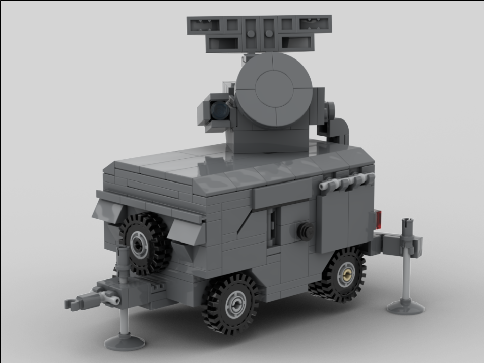
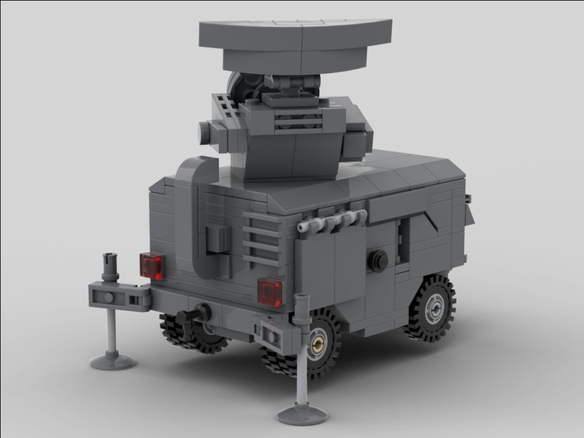

The Skyguard radar is the fire control unit of the Skyguard system, which is a Swiss-made anti-air defense system. The unit is equipped with a doppler search radar and a doppler pulse tracking radar, which can effectively detect low-altitude threats at a range of 20 km (12.5 mi). The radar relays information to the other units in the Skyguard system, warns of incoming air-to-surface missiles, and allows accurate tracking of targets.
This model features a poseable search radar, tracking radar, and side camera, two opening doors, a computer with space for a minifigure inside the cabin, two storage compartments on the side, two outriggers in the back and one in the front, and four rolling wheels (wow!).
Deployed:
